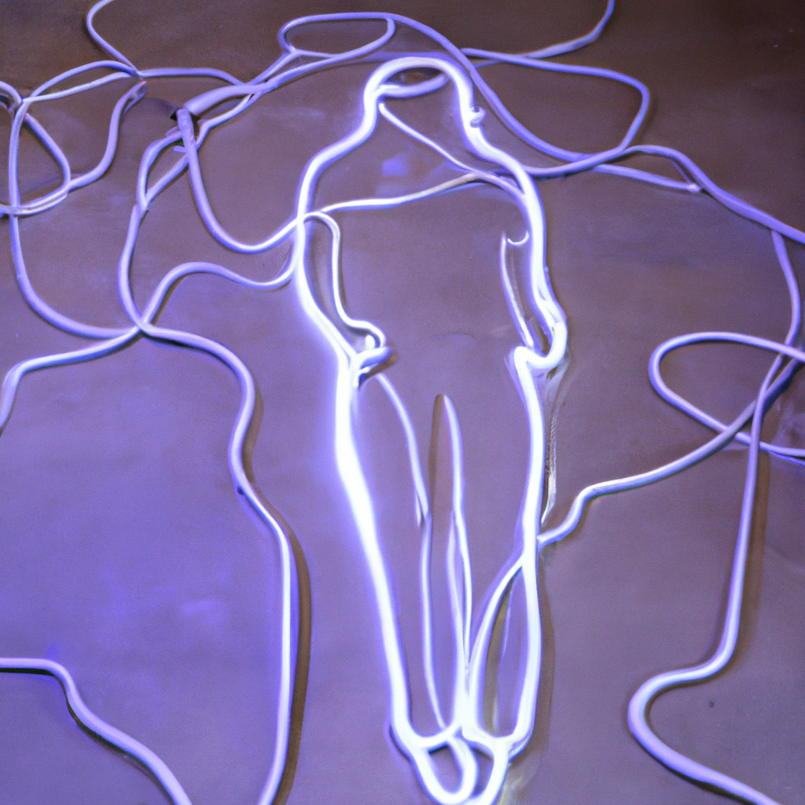
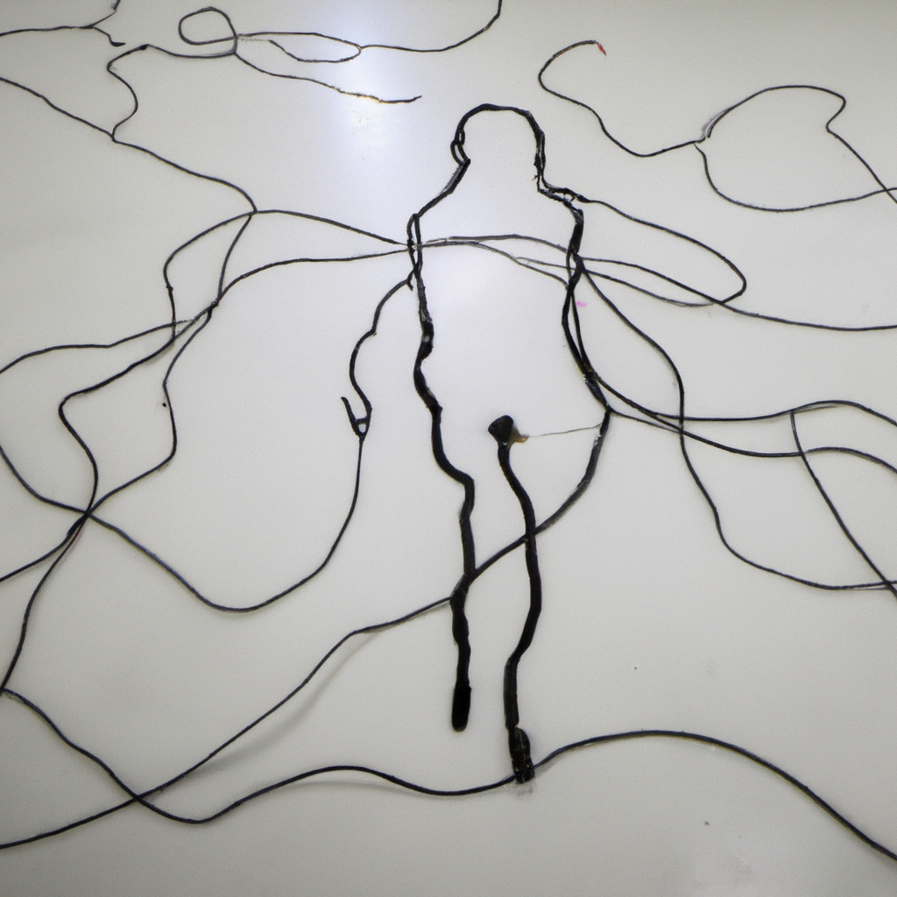
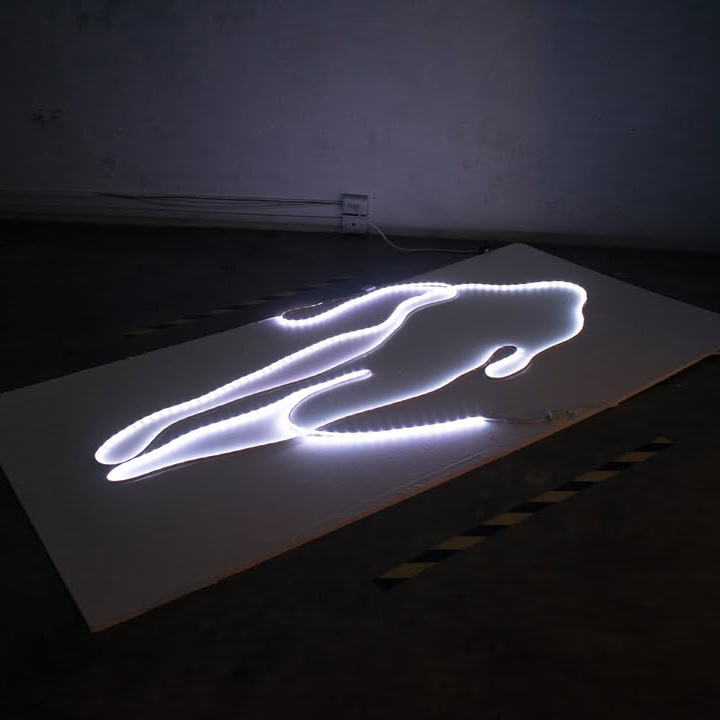
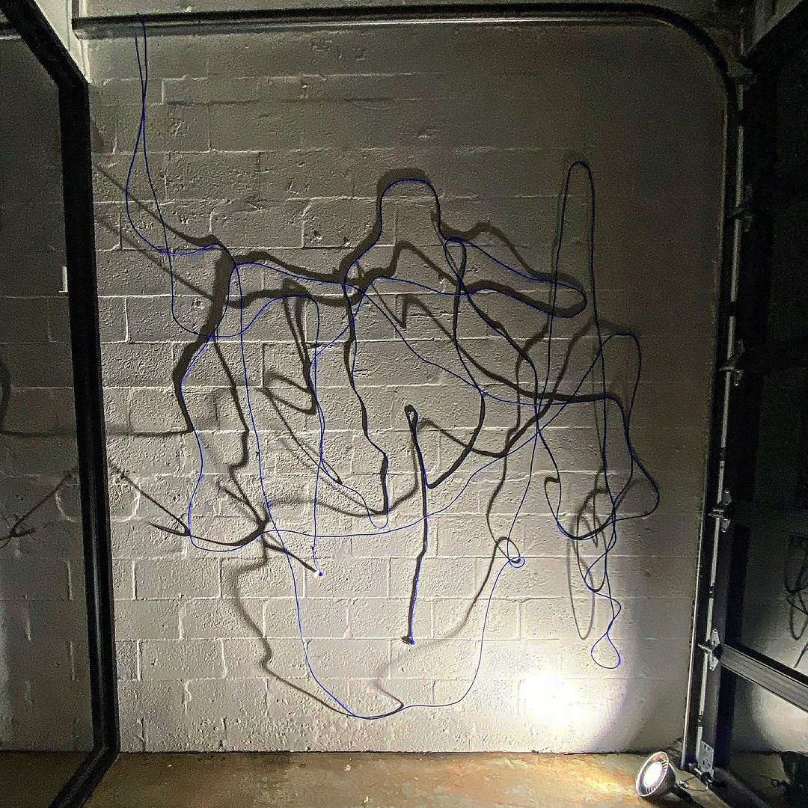

Recursive Value
Oolite Satellite
Installation, ethernet cables
Miami, Florida, 2023
Internet Entanglement
CONTINUUM
National Museum of Art of Guatemala (MUNAG)
Installation, ethernet cables, led light
Antigua, Guatemala, 2024
"Internet Entanglement" recreates a police crime scene outline using Ethernet cables, highlighting the dangers of online interactions and the prevalence of internet homicides. The work addresses fatal encounters initiated through digital platforms and the risks associated with viral trends and dangerous online behaviors.
The Ethernet cables, symbols of connection, are recontextualized as warnings about trust and safety in digital spaces, reflecting on the vulnerabilities created by internet anonymity.
The initial concepts for the installation were sketched using DALL·E, exploring visual ideas through AI-generated images before materializing the piece physically. This process bridged digital imagination with real-world construction.